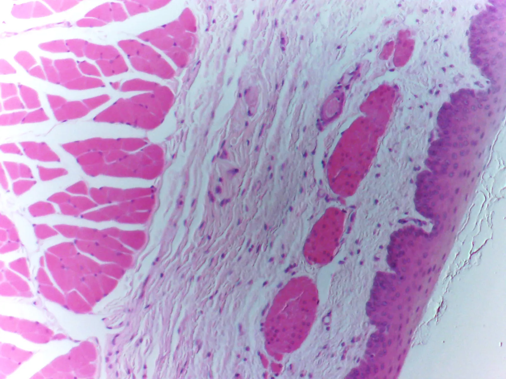
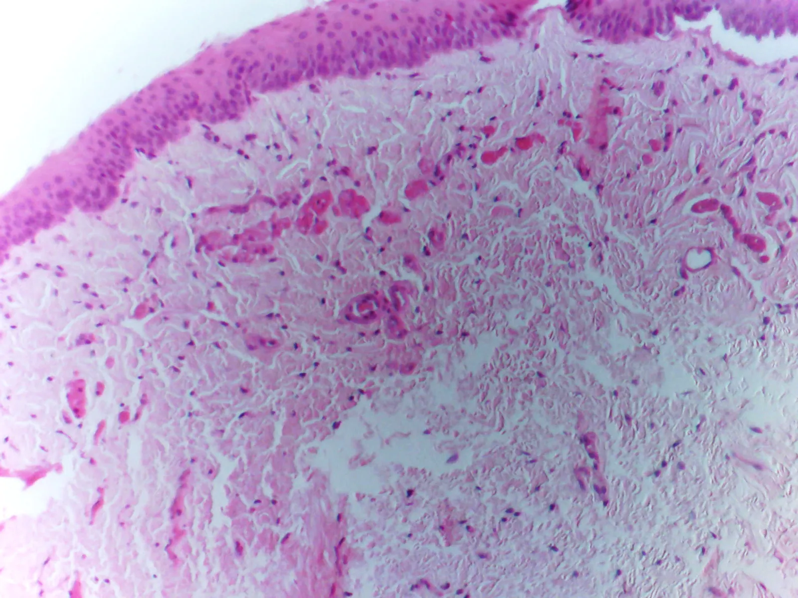

Lâmina 43 · Sistema digestório
Esôfago


Toque na imagem para ampliar. No computador, use as setas do teclado para trocar de imagem.
Lâmina 43 · Sistema digestório


Toque na imagem para ampliar. No computador, use as setas do teclado para trocar de imagem.